NT第五課 第39-47步 兩種反應 - 耶穌說：我是神
課程簡介：本課涵蓋基礎聖經內容，幫助學習者理解歷史或教義。
課程內容
前言
介紹課程的核心概念，請記錄筆記。
第五課: 第39-47 步
第三十九步 兩種反應
動作：豎起兩隻手指
第四十步 眾人說：“好美！”
動作：雙手在腰間並排後分開，然後豎起兩隻拇指雙手（掌心向下）在腰間並排，向兩邊分開，並說“眾人說”；然後豎起兩隻拇指，說“好美！”
經文：
l 可 7:36-37 耶穌囑咐他們不要告訴人。但他越發囑咐，他們越發傳揚開了。37 眾人分外希奇，說：“他所作的事都好；他連聾子也叫他們聽見，啞巴也叫他們說話。”（另參路7:16）
l 約 6:14-15 眾人看見耶穌所行的神跡，就說：“這真是那要到世間來的先知！”15 耶穌既知道眾人要來強逼他作王，就獨自又退到山上去了。
問題：
根據可 7:36-37，耶穌行了神跡之後，怎樣吩咐眾人？
眾人有沒有聽從？為什麼（37 節）？
他談論耶穌？是好還是壞？
根據約 6:14-15，眾人怎麼評論耶穌？他們想做什麼？他們對耶穌的印象是好是壞？
解釋：
眾人都喜愛耶穌。他們看見祂治好有病的、跛的、聾的、盲的；看見祂像摩西一樣為幾千人提供食物；看見祂憐憫他們、愛他們。他們聽見祂帶著權柄和能力教導人。
他們都認為祂是一個偉大的人物。有些人認為祂是先知；有些人覺得祂就是他們盼望已久的王。他們的感覺是那麼強烈，他們已準備好將耶穌帶到耶路撒冷，強逼祂作王。
請看耶穌的態度：祂沒有讓眾人的讚美動搖祂的意志。祂知道眾人的心態；祂知道眾人今天會跟隨祂，但也許明天便不會（約2:24）。耶穌也知道眾人跟隨祂的目的；祂知道有些人是真心的相信，但大部分人只是因為可以從祂那裏得著什麼而跟隨祂（約6:26）。
默想：
我們不能因為其他人的讚美而動搖心志，也不要因為神給我們職分就驕傲自大。
我們要得神的讚美，不是人的讚美。得到同工鼓勵是好的，我們也應該每天鼓勵別人。
但假如我們相信奉承或者客套的話，因而驕傲自滿，這便不是好事。
另外，很多人因為耶穌治好他們的病便信祂，這是好的，但這只是信仰的初階。
我們必須領人超越這初階。我們要跟隨祂，不是因為祂為我們做了什麼，而是因為祂是我們的主，是我們的救主。
我們不要強調神的賜福，要強調賜福的神；不要尋求神的恩賜，要尋求賜恩的神；不要渴慕神為我們成就的事情，要渴慕神自己。你又怎樣？你尋求什麼？你為什麼跟隨耶穌？是因為你欣賞祂，對祂有好感？是因為祂為你做了些什麼？還是因為你相信神的話語？因為你認識神是誰？
第四十一步 領袖說：“犯罪！”
動作：雙手在額前並排後分開，然後兩隻拇指指向下雙手（掌心向下）在額前並排，向兩邊分開，並說“領袖說”；然後兩隻拇指向下，說“犯罪！”
經文：
l 約 5:16 所以猶太人逼迫耶穌，因為他在安息日作了這事。
l 可 3:6 法利賽人出去，同希律一黨的人商議，怎樣可以除滅耶穌。
問題：
1. 根據約 5:16，猶太人的領袖開始怎樣對耶穌？為什麼？
2. 根據可 3:6，法利賽人和希律黨人在跟耶穌幾次辯論安息日的事情後，商議做什麼？
解釋：
最初他們辯論禁食和節期的問題，之後辯論安息日的問題。地區猶太領袖查探有關耶穌的事情，他們發現了一些他們不太喜歡的事情：耶穌與罪人及稅吏吃飯，甚至收稅吏作門徒！祂不遵行法利賽人持守的潔淨
禮儀，也不尊重“古人的遺傳”。
在這眾多的事情中，爭議最多的，是安息日的問題。安息日本來是神給人從工作中息去勞苦的日子，但在耶穌的時代，出現了很多有關安息日的規條，幾乎涉及生活的每一個細節。安息日不但不能讓人安息，反而成了百姓的重擔。耶穌恢復安息日的原意，讓人從中得到安息。但耶穌的教導使法利賽人感到受威脅，因為他們相信，“古人的遺傳”與經文本身具有同樣的權威。假如傳統可以不理的話，法利賽人便會失去作為民間領袖的依據。他們所講的潔淨也會被視為虛假。
因此，有身份、有權勢的撒都該人和法利賽人，都拒絕接受耶穌是彌賽亞。現實中的彌賽亞並不合乎他們的假設和期望，因此他們拒絕接受祂。不過，他們還未有完全地拒絕祂，因為最高的領袖們還未作最終的決定，耶穌的時候也還未到。然而，地區領袖反映了國家領袖的想法；國家領袖最終會拒絕祂。
默想：
有些人以為他們的見解與聖經同等重要，甚至比聖經更重要（林前 14:36）。又有些人利用聖經，甚至曲解聖經，以圖解釋他們自己的想法（林後4:2）。這些都是錯誤和可恥的做法。因此，當我們讀聖經的時候，不要憑自己的意願認定神是誰，或者祂會怎樣行事；這是非常重要的。我們必須放開心懷，找出經文的意義。我們必須讓神作神，並且認識祂，而不是把我們的意思強加在經文裏。
另外，我們的教會也許有很多傳統，這些傳統也許很好、很有益處；但這些傳統的權威，不能在神之上，也不能在祂的話語之上。我們的文化也許有一定的做事方式，這些方式也許很好、很有益處；但它們的重要性不能高於神，也不能高於神在我們身上的旨意。在教會裏，傳統有它的位置，但不要因為傳統而不遵行神的話（可7:13）。
第四十二步 三個結果
動作：豎起三隻手指
由於猶太人的領袖拒絕接受耶穌的身份，祂便開始集中於三件非常重要的事情。
第四十三步 用比喻說
動作：保持三隻手指豎起，用另一隻手，指著第一隻手指
經文：
l 可 4: 34 若不用比喻，就不對他們講。沒有人的時候，就把一切的道講給門徒聽。
l 太 13:10-13 門徒進前來，問耶穌說：“對眾人講話，為什麼用比喻呢？”11 耶穌回答說：“因為天國的奧秘，只叫你們知道，不叫他們知道。12 凡有的，還要加給他，叫他有餘；凡沒有的，連他所有的也要奪去。13 所以我用比喻對他們講，是因他們看也看不見，聽也聽不見，也不明白。”
l （另參路8:9-10）
問題：
1. 根據可 4:34，耶穌對誰用比喻？對誰解釋比喻？
2. 在太 13:10-13，門徒問耶穌什麼？請用你的話將耶穌的答案寫在下面：
解釋：
耶穌開始做的第一件事情，是用比喻對眾人講說而不加解釋。
耶穌在傳道之初，已經用故事來說明和解釋祂要教導眾人的道理。不過由這時開始，祂的比喻既用來顯露，也用來隱藏⎯⎯祂用比喻向那些願意接受祂的人顯露真理，向那些不願意接受祂的人隱藏真理。祂用這種方式向門徒顯露真理，目的是要教導他們需要知道的天國事情，好裝備他們。
耶穌將天國奧秘的鑰匙交給了祂的門徒。在聖經裏，“奧秘”一詞指的是揭露向來隱蔽、不為人知的事情。因此在新約，“奧秘”是指揭露未曾在舊約顯露過的神聖真理。
以色列的領袖們自以為最認識神和祂的計畫，畢生致力維護他們在屬靈知識領域的崇高地位，誰料卻發現自己竟在神的“內圈”之外。最親近神的人反而是漁夫、稅吏和一群“沒有學問的小民”（徒4:13）。耶穌將奧秘交托他們—— 祂向他們揭露神的國快到了！這是自從神向亞伯拉罕親自顯現以來，最大、最寶貴的奧秘。
那些受過教育、理應明白比喻的人因為沒有打開心門去領受這些比喻要說明的真理，結果只能明白那些責備他們的部分（可12:12）。這些關乎他們得救的比喻，竟成了他們要除滅耶穌的另一個原因。
天國
簡單來說，天國有三方面。
第一方面是它關乎整個宇宙，即是宇宙萬物都服在全能者的權柄之下。祂是宇宙的王，並且作王直到永遠（詩103:19）！
第二方面是全能者會親自作王。這是舊約先知所指的國度：這王會在耶路撒冷作王，掌管全世界。通常一般人稱它為千禧年國度。
當施洗約翰和耶穌說“日期滿了，神的國近了，你們當悔改、信福音”時，他們所指的也許就是這個國度。
但當領袖們拒絕接受他們的王，耶穌便聚集祂的門徒，開始對他們講天國的第三方面。這是一個間接由耶穌作王的國度，一個以他人作媒介來管治的國度。從那時開始，耶穌在接受祂的人的心中作王。當愈來愈多人接受耶穌作他們生命的王，活出事奉耶穌的生命，祂的國度便愈發擴展。
神在創世之初，已經定意叫人代祂管理世界（參看《舊約精覽》第二部分第三課）。
但當人犯罪墮落，撒但便成了暫時的掌權者，在這世上作王（約12:31, 14:30, 16:11）。
不過他只是非法取代，他的管治並不正當，也註定失敗。
在整個舊約裏，神借著屬祂的人顯明祂在世上的旨意，彰顯祂在地上的權能。神呼召以色列民出來，就是要他們成為彰顯祂的旨意和權能的主要器具。當彌賽亞（神的兒子）來到世上，祂便成了神特別的中保，成了具神性和人性的掌權者。當猶太人拒絕接受聖子，神便借著那些屬基督的人，那些因有祂的聖靈內住而得力的人，繼續掌權。因此，在這個時代，教會就是神在地上掌權的媒介。我們只要有愛心、彼此合一、敬虔對主、服事他人、活出基督的樣式，就能顯出神在掌管我們的生命。
默想：
你如何顯出神掌管著你的生命？請作自我反省：你有沒有容讓神在你生命中充分地掌權？請根據以下六項，將你對自己的評估寫在橫線上：
1. 你對祂的愛 ___________________________________________________________________
2. 你對其他人的愛 ______________________________________________________________
3. 與弟兄姊妹合一的表現 ________________________________________________________
4. 你對神的服事 ________________________________________________________________
5. 你對其他人的服事 ____________________________________________________________
6. 你的性格愈來愈像基督 ________________________________________________________
第四十四步 預言受死
動作：指著第二隻手指
經文：
l 太 16:21 從此耶穌才指示門徒，他必須上耶路撒冷去，受長老、祭司長、文士許多的苦，並且被殺，第三日復活。
l （另參路18:31-34）
問題：
在太 16:21，耶穌對門徒說明哪四件事？彼得怎麼回應（22 節）？為什麼耶穌稱他為撒但（23 節）？
解釋：
耶穌開始做的第二件事，是告訴門徒祂要受死。若神的國要來，這個國的君王需要對付世人的罪；
世人的罪只有借著這個君王的死才能解決。可是門徒不明白。直至耶穌復活後，天使提醒他們耶穌說
過的話，他們才曉得（路24:6、46）。
默想：
在馬太福音 16 章，彼得指出耶穌是基督、是永生神的兒子；耶穌也說這是神指示他的（太16:16-17）。但彼得跟著卻說了一些從撒但而來的話！這是多麼強烈的對比！
然而這正是我們的寫照。我們可以在同一天用舌頭服事神，又服事撒但。
教導別人時務請小心！因為撒但也可以利用教會領袖的話。也許開始的時候你很忠心傳講神的話，但之後你可能會因為不小心或驕傲，講了一些你自己的教導，不是神的教導。要確保自己忠心地傳講神的話，並在教導時心存謙卑。記著，作為教師，我們受的審判會嚴厲些，因為我們對人的影響較大。
雅各警告教師要小心舌頭。我們用它來祝福，也用它來點起爭辯、閑言、爭吵的“火”，傷害他人。請細讀和默想雅各書3 章1-12 節，我們應否一方面用神的話祝福人，另一方面又說傷害教會的話呢？
主耶穌也跟門徒說明祂將要如何受死。祂告訴他們，祂要走的路，他們也要走。
請讀馬太福音16 章24-27 節，看跟隨基督的人必須走的是一條怎樣的路。
所有渴望跟隨耶穌並在的國裏與一同作王的人，都需要走耶穌走過的道路——一條十字架的道路。
第四十五步 裝備門徒
動作：指著第三只手指
經文：
l 路 8:1 過了不多日，耶穌周遊各城各鄉傳道，宣講神國的福音。和他同在的有十二個門徒。
l 約 15:15 以後我不再稱你們為僕人，因僕人不知道主人所作的事。我乃稱你們為朋友，因我從我父所聽見的，已經都告訴你們了。
問題：
1. 根據路 8:1，耶穌周遊各城各鄉傳道的時候，誰跟祂在一起？
2. 根據約 15:15，為什麼耶穌稱門徒為朋友，不稱他們為僕人？
解釋：
從這時起，耶穌開始做第三件事情—— 加強教導和裝備門徒。祂大部分的時間和精力都花在門徒身上。為了裝備他們，祂私下對他們講解比喻（可4:34），回答他們的問題，又帶著他們周遊四方，在教導、事奉和日常生活上都以身作則。祂也把神要門徒學習的一切事情教導他們。耶穌所講的事情，有些是門徒不明白的，但是耶穌知道，將來聖靈會來教導門徒，讓他們終於能明白祂所講的一切。
默想：
耶穌要優先處理的，是裝備和栽培門徒—— 祂的下一代。祂教導他們、帶著他們周遊各地、讓他們與祂同工、花時間給他們講解道理和回答問題。祂也差他們出去，然後等待他們回來向祂報告。栽培下一代的工作在耶穌的事工裏是非常重要的一環。
這項工作在你的事工裏重要嗎？你有沒有栽培下一代？有沒有把這項工作視為要優先處理的工作？你有沒有交棒？
第四十六步 猶太
動作：指著猶太，然後走過去
有一段短短的、大約三個月的時間，耶穌來到耶路撒冷和猶太地區講道。在這段短時間內，祂為自己作了非常重要的宣稱。這些重要的宣稱都是以“我是……”開始的。在這一課和下一課，我們會看其中四個。
第四十七步 耶穌說：“我是神！”
動作：指著鼻子兩次，然後指著天指著鼻子兩次（同時說“我是”），然後指著天（說“神”）。
經文：
l 約 8:56-59 “你們的祖宗亞伯拉罕歡歡喜喜地仰望我的日子；既看見了，就快樂。”57 猶太人說：“你還沒有五十歲，豈見過亞伯拉罕呢？”58 耶穌說：“我實實在在地告訴你們，還沒有亞伯拉罕，就有了我（原文作“我是”）。”59 於是他們拿石頭要打他；耶穌卻躲藏，從殿裏出去了。
解釋：
在這段經文，耶穌似乎是說，祂早在亞伯拉罕還沒有出生的日子以前，就已經存在。這當然是事實，但耶穌所指的還有更深的意義：祂宣稱自己是神！祂說“還沒有亞伯拉罕，就有了我”，任何一個猶太人聽到這句話，都會聯想到出埃及記3 章14 節，神對摩西說的話：“我是自有永有的，你要對以色列人這樣說：‘那自有的打發我到你們這裏來。’”（“自有永有”和“自有”原文都作“我是”。）換句話說，耶穌聲稱自己就是那自有永有、創造天地、偉大的耶和華神！
猶太人完全明白耶穌的意思。他們的反應是要用石頭打祂，因為他們不信祂。他們認為祂只是一個人，不應說僭妄褻瀆的話。
請在下面寫出可以證明或顯明耶穌是神的經文。
約 1:1 道就是神
____________________________________________
________________________________________
____________________________________________

信息：道路、真理、生命 約 14:6
前言
在約翰福音14 章1-2 節，耶穌對門徒作了一個應許，給他們天國和永生的盼望。祂說祂要到父那裏為他們預備地方。但多馬說：“……我們……怎麼知道那條路呢？”
（約 14:5）這是一個十分重要的問題。耶穌的回答是一篇很奇妙的真理，充滿了對我們的鼓勵。
壹． 耶穌是道路（另參詩27:11；徒9:2, 19:9、23；來10:20）
我們需要到別的地方，因為我們現在身處的不是一個好地方—— 我們活在罪中，不能走出來。但我們必須離開；聖經告訴我們，天父可以讓我們住在天家。怎樣才可以去到呢？耶穌說人不能靠自己的努力找到往天家的路，也不能靠自己的能力踏上旅程。你能否找到往天家的路，不在乎你得到什麼或做了什麼，只在乎你是否認識祂，跟祂有沒有關係。耶穌說，祂不單要將這條道路顯示給世人，且祂就是這條道路。要到天家其實不需要守一大堆的規條，但需要有耶穌。只有與耶穌建立關係，你才能走上通往天家的旅程。祂的死為我們“開了一條又新又活的路”（來10:20）。
從前有一個頭腦簡單的人想到月球。他試過跳高、爬上梯子、爬上山頂。他會成功嗎？當然不會。他只有坐火箭、坐穿梭機才能到月球。同樣，神給了我們一個通往祂那裏的途徑⎯⎯ 耶穌。要靠人的努力去到神那裏，就像要跳上月球那樣愚昧。
貳． 耶穌是真理（另參約1:14、17, 5:24, 8:32；詩86:11）
假如我們要到天父家裏，我們當然要認識天父。但我們可以靠誰得到有關天父的真理呢？只有耶穌！祂不單會將真理告訴我們，且祂就是真理！祂不單會將神介紹給我們，且祂就是神！耶穌是讓我們認識生命真義的可靠途徑。假如我們認識耶穌，我們便會認識天父。有了這種關係，我們便可以活在真理中。活在這種關系裏，我們便可以行在真理中。能活在真理中，就能“叫（我）們得以自由”（約8:32）。
三． 耶穌是生命（另參約1:4, 3:14-15, 17:3；但12:2；詩91:16）
要住在天家，生命是最重要的元素。假如我對你說要給你一所很漂亮的大房子（只給你自己住），但要到你死了我才會興建，這對你有用處嗎？沒有！我們的情況也一樣。如果我們都是死人，就沒法享用父神的住處。也許你會說，我們會呼吸會走路，怎會是死人？唉！我們“死在罪惡過犯之中”啊（弗2:1-2）！我們沒法叫自己有生命，我們沒法自救。我們可以怎麼辦呢？
我們需要生命；只有借著與耶穌基督的關係，我們才可以有生命（約17:3）。認識耶穌就是永生；假如你不認識祂，你便沒有生命。認識耶穌，你便可以“出死入生”。神沒有“半生半死”的兒女；你一是有生命，一是沒有。我們如何得生命？只有憑著信心認識耶穌，我們才可以有生命（約壹5:11-12）。
總結
父神有一個家，我們可以住在那裏。但只有跟耶穌有關係，我們才可以住進這個為我們預備的地方。耶穌是通往父家的途徑（道路）；祂是一切真實事物的可靠來源（真理）；祂是救我們脫離死亡的人（生命）。換句話說，耶穌是我們與父神建立關係的唯一橋樑。
耶穌也是我們到父神家的唯一鑰匙，只有祂才能在那裏為我們預備地方。今天你們便要認識祂！
39．兩種反應 Two Reactions 39 . Hai loại phản ứng
|
39．兩種反應 |
Two Reactions |
Rise up 2 fingers |
39 . Hai phản ứng |
H già lên hai ngón tay |
|
nt_39_兩種反應 Two Reactions 39 . Hai loại phản ứng
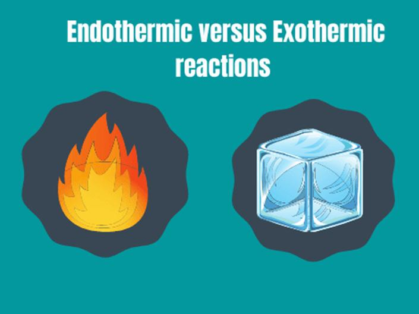
40．眾人說：“好美！” The Crow said: “Good” 40 . Mọi người đều nói: “Đẹp quá!”
|
40．眾人說：“好美！” |
The Crow said: “Good” |
Two hands holding in the waist level and then separate, raise two thumb upward |
40 . Mọi người đều nói: “Đẹp quá!” |
Đặt hai tay cạnh nhau ở thắt lưng rồi dang rộng ra, sau đó giơ hai ngón tay cái lên |
可 Mak Mác 7:36-37 约 Jhn. Giăng 6:14-15 |
nt_40_眾人說：“好美！” The Crow said: “Good” Mọi người đều nói: “Đẹp quá!”
41．領袖說:“犯罪！”The Leader said: “Sinned” 41 . Người hướng dẫn nói: "Phạm tội!"
|
41．領袖說：“犯罪！” |
The Leader said: “Sinned” |
Two hands put before the forehead level, and then separate, two thumbs pointing downward |
41 . Người đứng đầu nói: "Tội ác!" |
Đặt 2 tay cạnh nhau trước trán rồi tách ra, sau đó hướng ngón cái xuống dưới |
约 Jhn. Giăng 5:16 可 Mak Mác 3:6 |
nt_41_馬太福音第十二章1-13節 耶穌是安息日的主
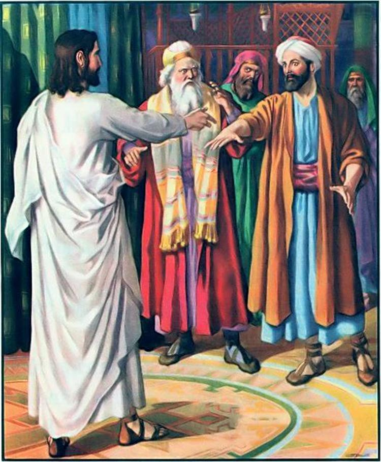
耶穌是安息日的主 ◎黃濠光牧師
「因為人子是安息日的主。」（8）
nt_41_馬太福音第十三章53-58節 拿撒勒人厭棄耶穌
拿撒勒人厭棄耶穌 ◎黃濠光牧師
「耶穌因為他們不信，就在那裡不多行異能了。」（58）
42．三個結果 Three result 42 . ba kết quả
|
42．三個結果 |
Three reseals |
Rise 3 fingers |
42 . Ba kết quả |
giơ ba ngón tay lên |
|
43．用比喻說 Use parables 43 . dùng ẩn dụ nói
|
43．用比喻說 |
Use parables |
Use one hand to pointing the first finger |
43 ．Dạy bằng dụ ngôn |
Giơ ba ngón tay lên và dùng tay kia chỉ vào ngón đầu tiên |
可 Mak Mác 4: 34 太 Mat Ma-thi-ơ 13:10-13 |
parables
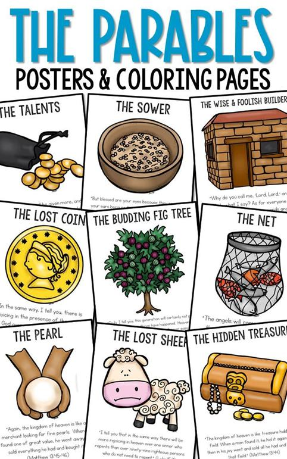
比喻: 屬靈的謎語
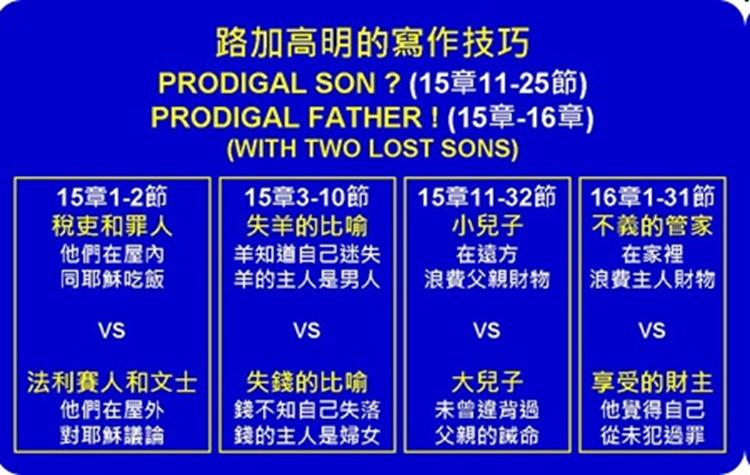
n 更簡單的說，比喻是用屬世的、可見的東西解釋天上屬靈的、抽象的東西。
n 所以比喻時常用“天國好比。。”作開始。
馬太福音第十三章1-9節 耶穌講撒種的比喻
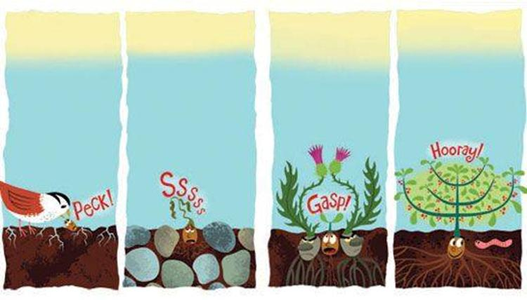
耶穌講撒種的比喻 ◎黃濠光牧師
「又有落在好土裡的，就結實，有一百倍的，有六十倍的，有三十倍的。」（8）
馬太福音第十三章36-52節 解釋稗子及其他比喻
解釋稗子及其他比喻 ◎黃濠光牧師
「他說：『凡文士受教作天國的門徒，就像一個家主從他庫裡拿出新舊的東西來。』」（52）
29. 天國的比喻 （13章）
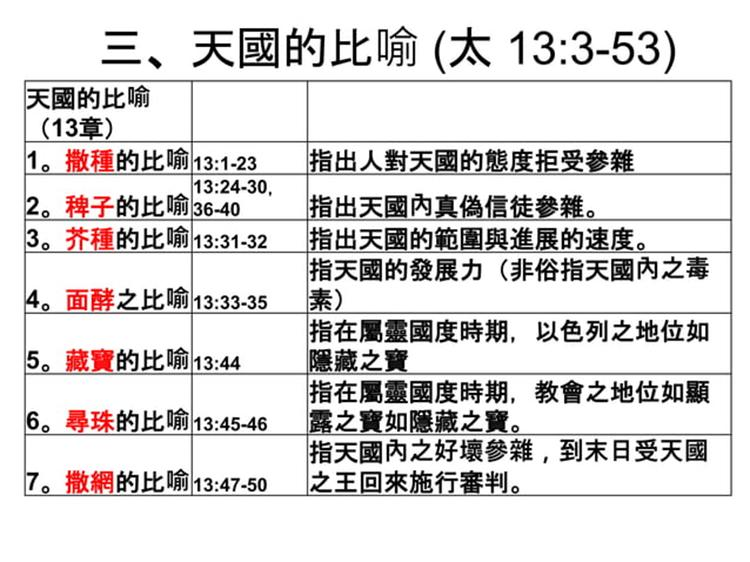
https://www.slideshare.net/slideshow/4-176450751/176450751#25
我們主的比喻
我們主的比喻
|
寓言 |
地點 |
馬特。 |
標記 |
路克 |
教訓 |
|
記錄在一本福音書中 |
|||||
|
稗子 |
|
|
生命與審判中的善與惡。 |
||
|
隱藏的寶藏 |
|
|
福音的價值。 |
||
|
美好的珍珠 |
|
|
基督徒尋求救贖。 |
||
|
抽拉網 |
|
|
可見的基督教會。 |
||
|
無情的僕人 |
|
|
忘恩負義的危險。 |
||
|
葡萄園裡的工人們 |
|
|
在不同時期調用。 |
||
|
兩個兒子 |
|
|
不真誠和悔改。 |
||
|
國王兒子的婚姻 |
|
|
需要正義。 |
||
|
十個童女 |
|
|
警惕而粗心的職業。 |
||
|
十大人才 |
|
|
利用優勢。 |
||
|
綿羊和山羊 |
|
|
最終好與壞的分離。 |
||
|
秘密生長的種子 |
|
|
宗教逐漸發展。 |
||
|
戶主 |
|
|
-- |
||
|
感謝赦免。 |
|
|
感謝赦免。 |
||
|
好撒瑪利亞人 |
|
|
對苦難有慈悲心。 |
||
|
半夜的朋友 |
|
|
恆心禱告。 |
||
|
有錢的傻瓜 |
|
|
世俗之心。 |
||
|
婚宴盛宴 |
|
|
對第二次降臨保持警惕。 |
||
|
婚宴盛宴 |
|
|
信任中的認真。 |
||
|
貧瘠的無花果樹 |
|
|
在恩典之下無利可圖。 |
||
|
豐盛的晚餐 |
|
|
神聖召喚的普遍性。 |
||
|
一塊錢 |
|
|
喜樂勝過悔意。 |
||
|
浪子 |
|
|
父愛對悔罪的兒子。 |
||
|
不公義的管家 |
|
|
為永恆做準備。 |
||
|
財主和拉撒路 |
|
|
來世的報應。 |
||
|
無利可圖的僕人 |
|
|
神要求我們一切的服務。 |
||
|
不公義的法官 |
|
|
恆切禱告的好處。 |
||
|
法利賽人和稅吏 |
|
|
自以為是和謙虛。 |
||
|
英鎊 |
|
|
勤奮有回報；懶惰受到懲罰。 |
||
|
記載於兩福音書 |
|||||
|
岩石和沙上的房子 |
|
一致且虛假的職業。 |
|||
|
酵 |
|
宗教的影響無所不在。 |
|||
|
迷失的羊 |
|
悔過之後的喜悅。 |
|||
|
記載於三福音書 |
|||||
|
新布舊衣 |
對舊偏見的新教義。 |
||||
|
舊瓶裝新酒 |
未重生的心中有新的精神。 |
||||
|
播種者 |
聽眾分成不同的班級。 |
||||
|
芥菜籽 |
福音的傳播。 |
||||
|
邪惡的農夫們 |
猶太人拒絕基督。 |
||||
|
無花果樹和所有的樹 |
第二次降臨的跡象。 |
||||
https://www.blueletterbible.org/study/pnt/pnt06.cfm
★nt_43_Các Ẩn Dụ Về Nước Thiên Đàng MA-THI-Ơ 13:1-23 天國的比喻
https://httlvn.org/bai-81-cac-an-du-ve-nuoc-thien-dang.html
★nt_43_Mt 13,44-52 TỪ BỎ CỦA CẢI ĐỜI NÀY ĐỔI LẤY NƯỚC TRỜI ĐỜI SAU 馬太福音 13:44-52 放棄今生的擁有，換取來世的天國
https://tgpsaigon.net/bai-viet/hiep-song-tin-mung-chua-nhat-17-thuong-nien-nam-a-60871
44．預言受死 Prophesying to be crucified 44 . Lời tiên tri về chịu chết
|
44．預言受死 |
Prophesying to be crucified |
pointing the second finger |
44 ．Lời tiên tri về cái chết |
Chỉ vào ngón thứ hai |
太 Mat Ma-thi-ơ 16:21 |
預言受死 Prophesying to be crucified
馬太福音第十六章21-28節 耶穌預言受苦與復活
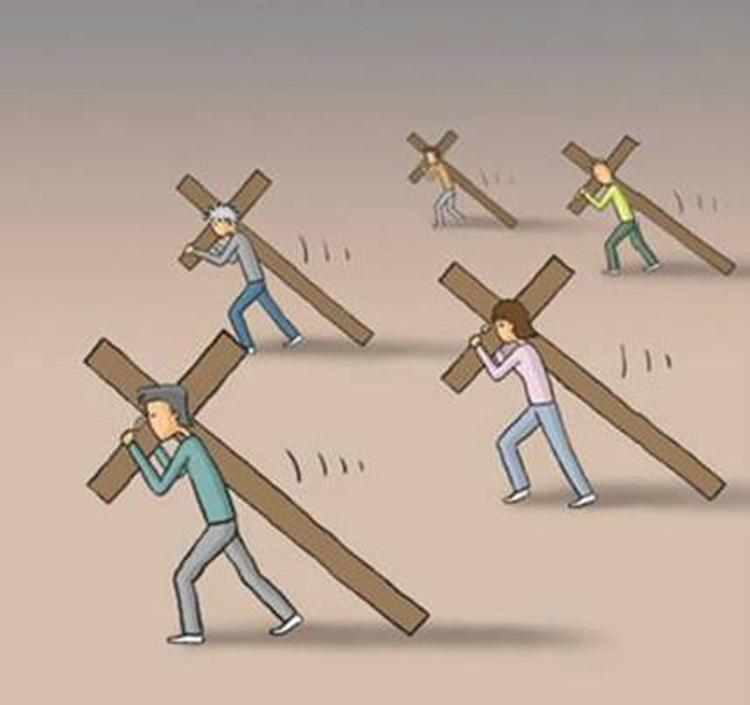
耶穌預言受苦與復活 ◎黃濠光牧師
「人若賺得全世界，賠上自己的生命，有什麼益處呢？人還能拿什麼換生命呢？」（26）
馬太福音第二十章17-19節 耶穌第三次預言受死與復活
耶穌第三次預言受死與復活 ◎黃濠光牧師
「看哪，我們上耶路撒冷去，人子要被交給祭司長和文士。他們要定他死罪，又交給外邦人，將他戲弄，鞭打，釘在十字架上；第三日他要復活。」（18-19）
上耶路撒冷之路（可 8：27-10：52）三次預言自己的受死與復活
一。耶穌三次預言自己的受死與復活
A. 三次預言受死與復活（8：31，9：30-31，10：32-34）
1. 耶穌糾正他們對於彌賽亞的觀念（8：27-31）
2. 耶穌以自己為例表明重要的真理（10：45）
B. 第一次預言受死與復活（8：27-9：30）
1. 往該撒利亞腓立比的村莊去的路上（8：27）
2. 耶穌教導門徒跟隨他的道路是一條受苦又榮耀的道路
C. 第二次預言受死與復活（9：31-10：31）
1. 經過加利利往迦百農去的路上（9：31、33）
2. 耶穌教導門徒神國的次序（神子民在神國中該有的次序）
D. 第三次預言受死與復活（10：32-10：52）
1. 往耶路撒冷去（32）
2. 耶穌再次教導門徒神國的次序
https://www.rolcc.net/rolcc/mediasync/sunday_school/archive/2016-01/2-mark/20160228-handout.pdf
★nt_44_họ sẽ giết chết Người, và ngày thứ ba Người sẽ trỗi dậy”. 他們要殺他 Matthêu (17,22-27)，第三天他就要復活。馬太 17:22-27
45．裝備門徒 Equipping Disciples 45 Trang bị cho đệ tử
|
45．裝備門徒 |
Equipping Disciples |
pointing the third finger |
45 ．Trang bị cho đệ tử |
Chỉ vào ngón thứ ba |
路 Luk Lu-ca 8:1 约 Jhn. Giăng 15:15 |
馬太福音第十八章15-22節 耶穌教導處理人際關係
耶穌教導處理人際關係 ◎黃濠光牧師
「那時，彼得進前來，對耶穌說：『主啊，我弟兄得罪我，我當饒恕他幾次呢？到七次可以嗎？』耶穌說：『我對你說，不是到七次，乃是到七十個七次。』」（21-22）
馬太福音第二十章20-34節 服侍的生命
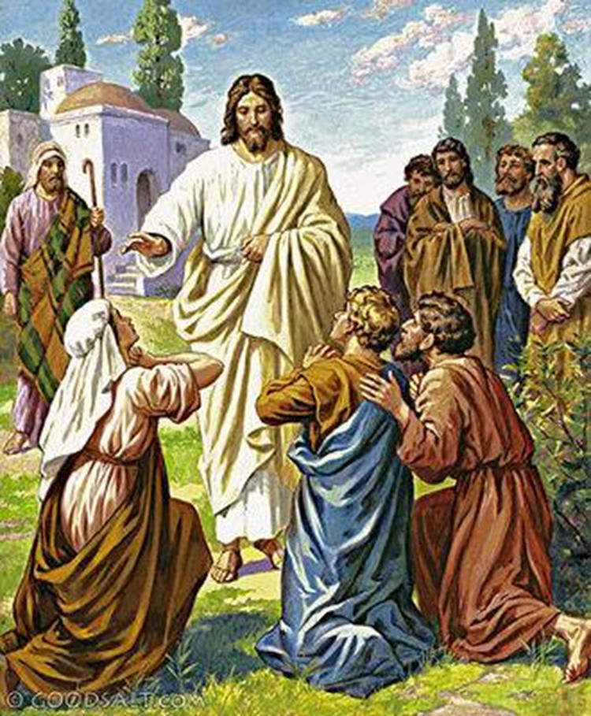
服侍的生命 ◎黃濠光牧師
「誰願為首，就必作你們的僕人。正如人子來，不是要受人的服事，乃是要服事人，並且要捨命，作多人的贖價。」（27-28）
Matthew马太福音：Matthew: 18:1-35 Page 13
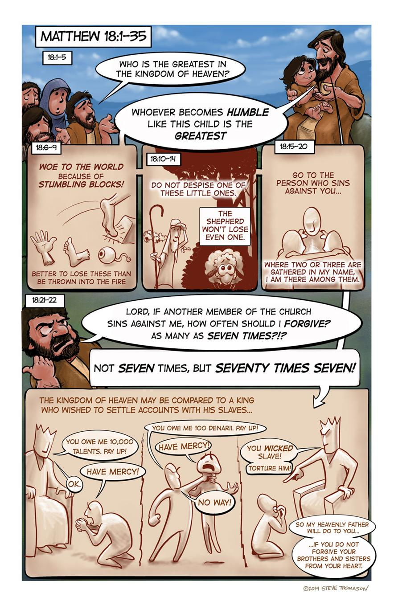
★nt_45_Noel Quesson - Chú Giải (Mc 6,7-13) 神把十二使徒召集在一起，並讓他們兩個兩個地出去。馬可福音 6:7-13
Chúa gọi Nhóm Mười Hai lại, và sai đi từng hai người một.
46 猶太 Judah 46 . Giu-đê
|
46． 猶太 |
Judah |
Go to Judah, and walk there |
46 . Giu-đê |
Chỉ vào Judea và bước qua |
|
猶大山地及鄰近地區地形圖
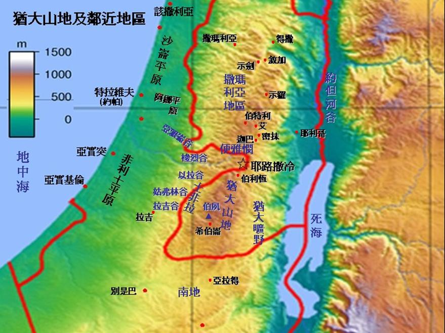
https://biblegeography.holylight.org.tw/index/introduction_detail?i_id=42
★nt_46_猶太 Judah 46 . Giu-đê
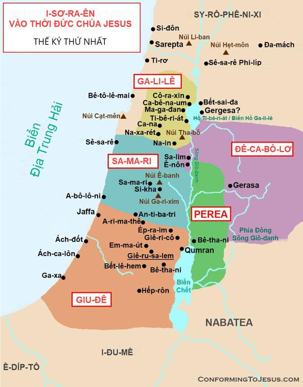
47．耶 穌 說 ：“ 我是神！” Jesus said: “I am God.” 47 . Chúa Giêsu nói: “Ta là Đức Chúa Trời!”
|
47．耶 穌 說 ：“ 我是神！” |
Jesus said: “I am God.” |
Use one finger to pointing the noise, and pointing to the sky |
47 ．Chúa Giêsu đã nói: “Ta là Thiên Chúa!” |
Chỉ vào mũi hai lần rồi chỉ lên bầu trời |
约 Jhn. Giăng 8:56-59 约 Jhn. Giăng 14:6 |
大衛鮑森 約翰福音 (二) 耶穌就是真理
The 7 “I Am” statements of Jesus
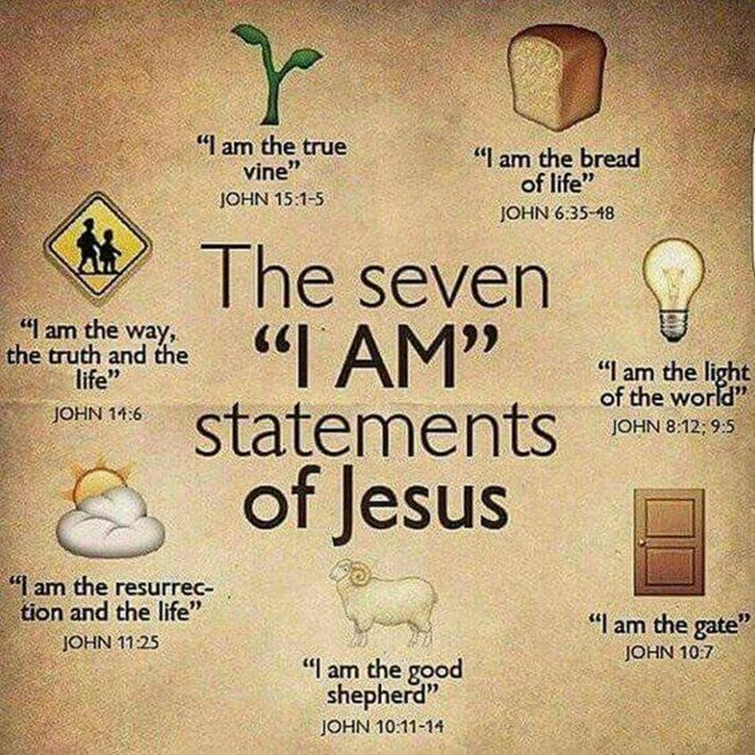
https://blogs.crossmap.com/stories/the-seven-i-am-statements-of-jesus-25XaNdJ_vuPRYbl4i5xu0
約翰福音第五章19-29節 耶穌與父神的連結
耶穌與父神的連結 ◎黃濠光牧師
「耶穌對他們說：我實實在在的告訴你們，子憑著自己不能做什麼，惟有看見父所做的，子才能做；父所做的事，子也照樣做。」（19）
約翰福音第六章60-71節 耶穌說的話就是靈就是生命
耶穌說的話就是靈就是生命 ◎黃濠光牧師
「叫人活著的乃是靈，肉體是無益的。我對你們所說的話就是靈，就是生命。」（63）
《約翰福音》：耶稣说:"我就是......"
|
耶稣就是…… |
经文 |
意义 |
|
人子 |
约6:27 |
耶稣所喜欢的自我称呼，它强调了祂的人性。但耶稣使用它时，是在宣称自己的上帝性。 |
|
生命的粮 |
约6:35 |
耶稣能赐与人生命，因祂是永生的惟一源头。 |
|
世界的光 |
约8:12 |
光象征属灵真理，耶稣是人对属灵真理渴求的答案。 |
|
羊的门 |
约10:7 |
耶稣是通往天国的惟一道路。 |
|
好牧人 |
约10:11 |
耶稣用旧约中描述的弥赛亚的形像，宣告自己为上帝，强调自己对世人的爱与引领。 |
|
复活、生命 |
约11:25 |
耶稣不仅是生命的源头，也是战胜死亡的力量。 |
|
道路、真理、生命 |
约14:6 |
耶稣赋予世人方法、信息和意义，这个称号也概括了祂降世的目的。 |
|
真葡萄树 |
约15:1 |
这个称号的另一部分十分重要：“你们是枝子。”耶稣提醒我们，枝子从葡萄树摄取生命的养料，不能脱离树身，同样，我们也完全依赖基督赐与我们属灵的生命。 |
★nt_47_耶穌說：“我是…” Chúa Jesus phán "Ta là..."
我是真葡萄樹、世界之光、生命之糧、好牧人
Chúa Jesus phán "Ta là..." Viedo
從「耶穌 - 生平」揣摩「耶穌 是 永生的神」
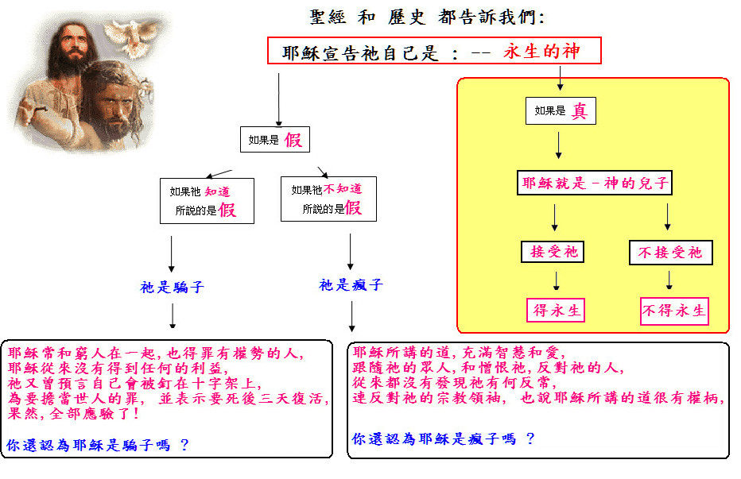
https://sharengan2001.blogspot.com/2012/10/blog-post_2433.html
48．“我是光！” “I am the Light.” 48 . "Ta là sự sáng!"
第3節
總結本課的關鍵教導。
總結
總結本課的關鍵教導。
教學影片
觀看本課的教學影片，深入了解內容。
課後作業
作業1：閱讀與反思
閱讀相關經文，寫下200-300字反思。
作業2：經文記憶
背誦一節經文並分享其應用。